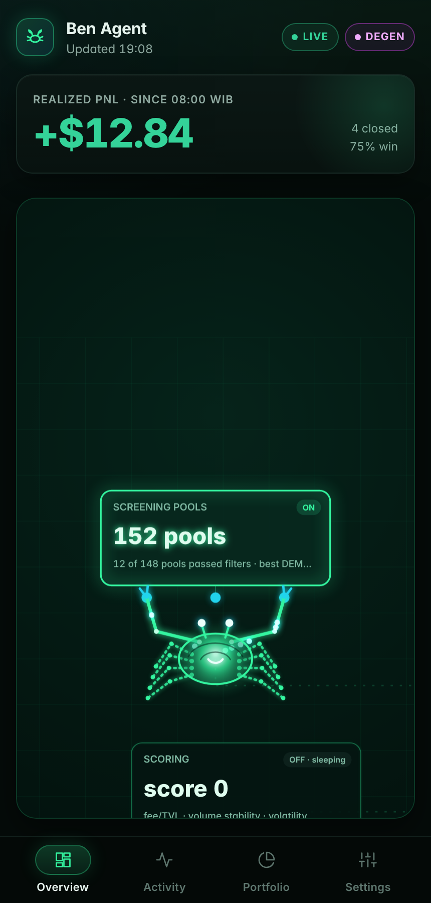
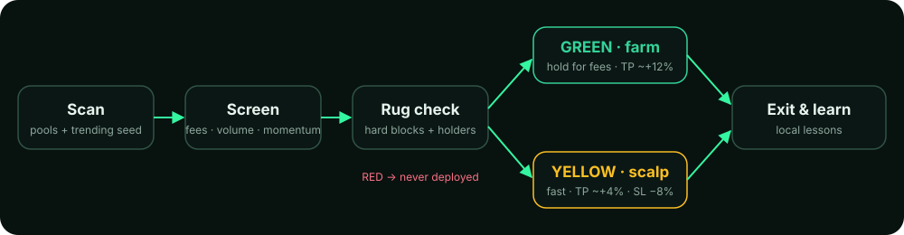
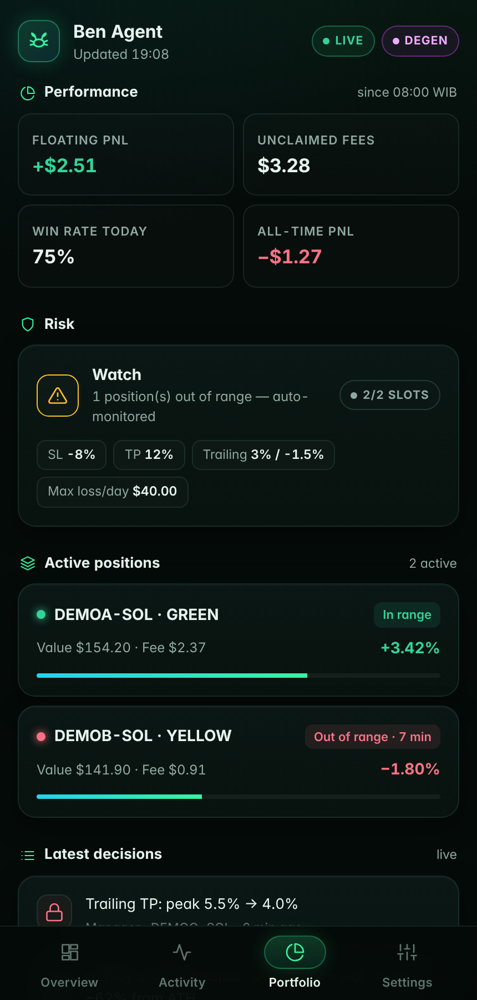
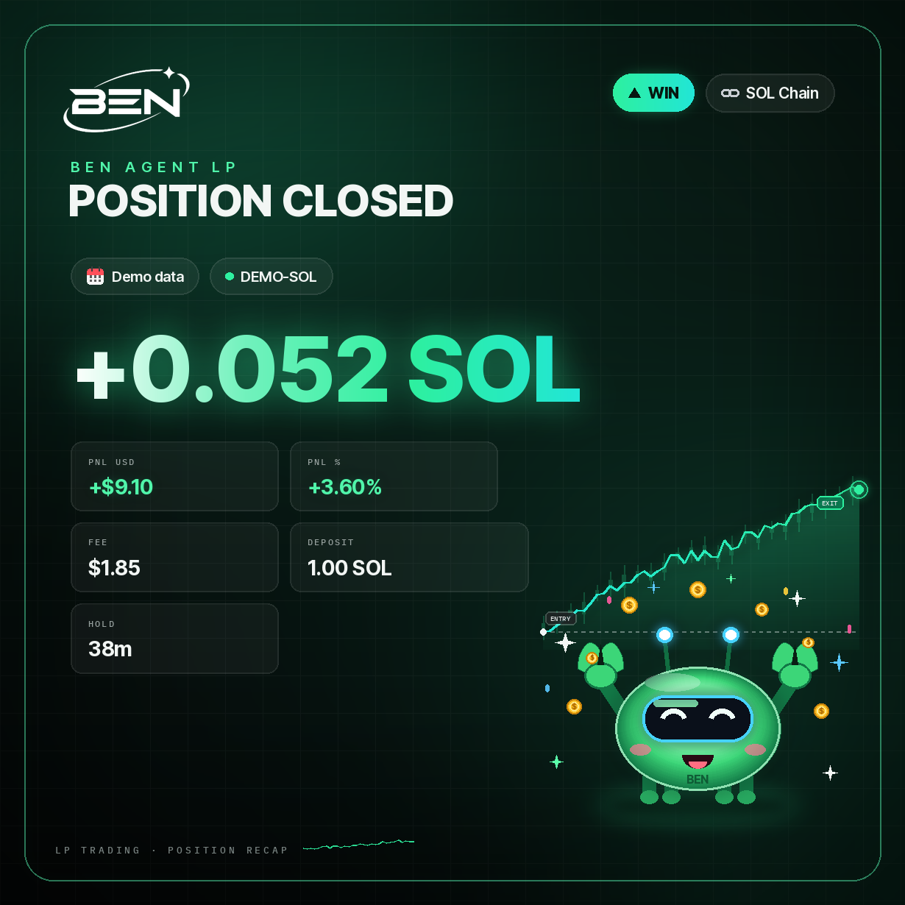
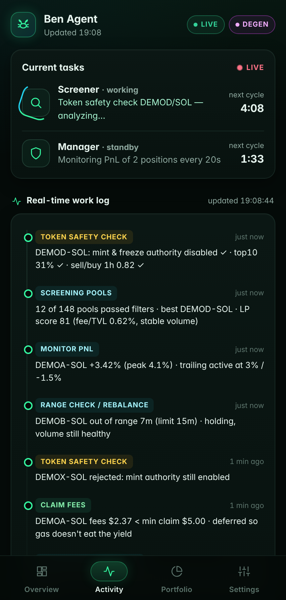
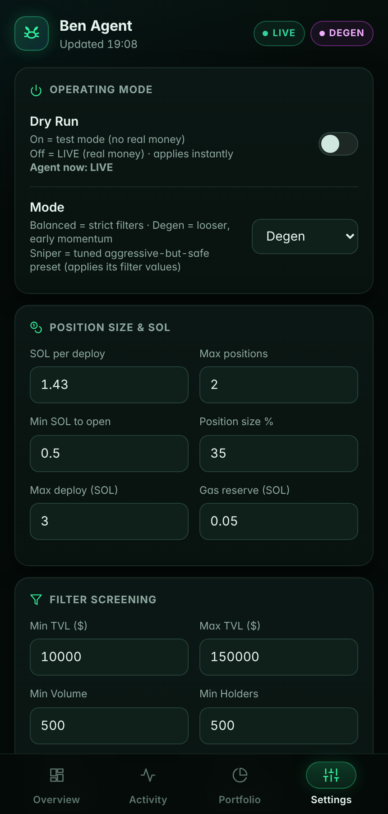

An autonomous LP agent that hunts hot, high-fee pools early.
Ben Agent scans Meteora DLMM pools around the clock, screens trending tokens for momentum and rug risk, and runs two strategy slots: a patient fee farm and a fast scalp. You control everything from Telegram @bensoll_bot and its mini app.

From scan to exit, in one loop
Every cycle runs the same pipeline. Pools that fail a hard safety block are tagged RED and are never deployed.

How it finds tokens
The agent combines several live data sources, so trending tokens show up on its radar instead of being missed by a single feed.
Trending seed
Tokens trending on GMGN and Jupiter go straight onto the radar, so new, hot tokens get screened as soon as they appear.
Volume score boost
Tokens with about $800K+ 1h volume get a large score bonus. It's a boost, not a requirement, so the agent keeps finding opportunities.
Momentum signals
It checks volume pace, transaction count, price trend, 5-minute bursts and trending status. A pool needs several signals before entry.
Two slots, two playbooks
The agent holds at most 2 positions at once. Each slot has its own rules.
Hold for fees
Safer pools with a high fee bar. The agent holds them longer to collect fees.
In fast, out fast
Looser filters for hot, riskier tokens. Only the hard rug blocks still apply.
Pools that fail hard safety checks are logged and skipped. The agent never deploys into them.

Rug protection, always on
Hard blocks run before any deploy, and exit guards keep watching while a position is open.
Hard blocks
- Honeypot
- Mint or freeze authority active
- Unlocked LP
- Already rugged
- Meteora blacklist
Holder checks
- Bundle detection
- Insider share
- Top-holder concentration
- Any single wallet >50% → blocked
Live guards
- Dump guard on sharp 1h drops
- Fast rug exit: price −15% in 5 min
- or liquidity −50% in 10 min
Cost guard
- Skips pools that need non-refundable bin-array rent
How positions are placed
Spot strategy, Degen mode
Liquidity is spread evenly across the range. The strategy is locked to Spot.
ATH-based range
The range reaches at least −60% from the token's ATH, capped at −90%, so the position stays useful through deep pullbacks.
Auto add liquidity
When price nears the edge of the range, the agent can add 1 SOL, up to a 2 SOL maximum per position.
Learns from every closed position
Each closed position is recorded and analysed on your own server. The lessons feed back into screening so the same mistakes aren't repeated. No external learning service, and your data never leaves your machine.

Dashboard & control
Everything runs from Telegram. The mini app shows what the agent is doing and why.


Honest PnL
PnL is calculated from the SOL you deposited, not pool TVL, with a daily reset at 08:00 WIB.
Instant DRY RUN / LIVE
Switch between simulation and live trading from the mini app. The header pill always shows the real mode.
Verified, non-root install
The installer verifies the code it installs and stops if an old version is detected. It runs as a normal user, no root needed.
Questions
Does Ben Agent hold my private key?
The agent runs on your own server. Your wallet key stays in your local environment file and is never shared with us or sent through chat. Never paste keys into Telegram or screenshots.
Can I test without real money?
Yes. Turn on Dry Run in Settings and the agent simulates decisions without sending transactions. The header pill shows DRY RUN.
How many positions does it open?
At most two: one GREEN (farm) slot and one YELLOW (scalp) slot.
Does it guarantee profit?
No. LP on volatile tokens can lose money through price moves, impermanent loss and rugs. The safety checks reduce risk but can't remove it.
Does it run all the time?
Yes, it runs 24/7 on your VPS under a process manager and reports to Telegram.